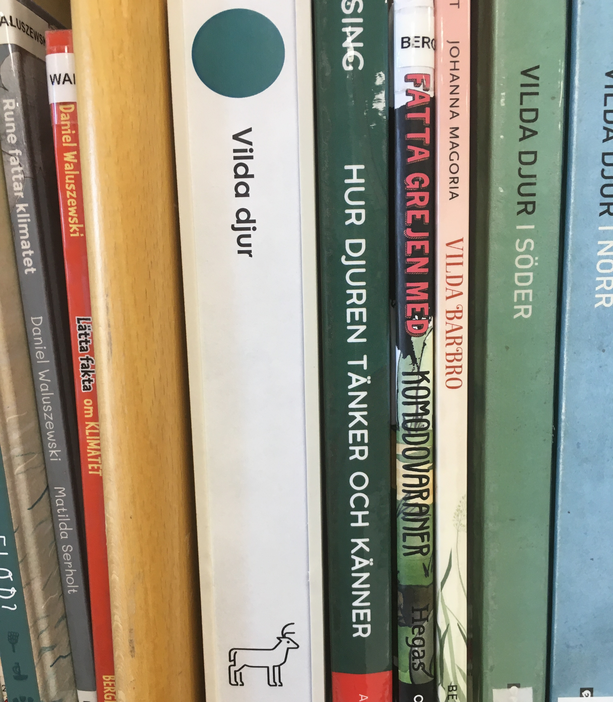

Inte illa, du skulle kunna bli detektiv.
Detta kallas för en knubb och den används för att visa information om böckerna som står till höger om den.
Det kan vara att författarens efternamn börjar på en viss bokstav, eller att böckerna är skrivna på ett
annat språk, eller att de handlar om ett visst ämne - som knubben på bilden. Gå till barnfaktarummet och
leta upp knubben för Vilda Djur.
